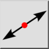
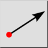

Automatycznie utwórz linię tego samego typu, co wybrana inna linia. Dotyczy to narzędzia linii równoległej.
Tworzy odcinki linii od punktu początkowego do punktu końcowego.

Tworzy nieskończone linie, które przechodzą przez dwa podane punkty. Są to tzw. linie rentgenowskie lub konstrukcyjne.

Tworzy promienie od danego punktu początkowego, przez inny punkt o nieskończonej długości.